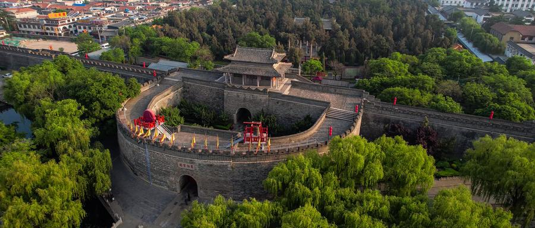
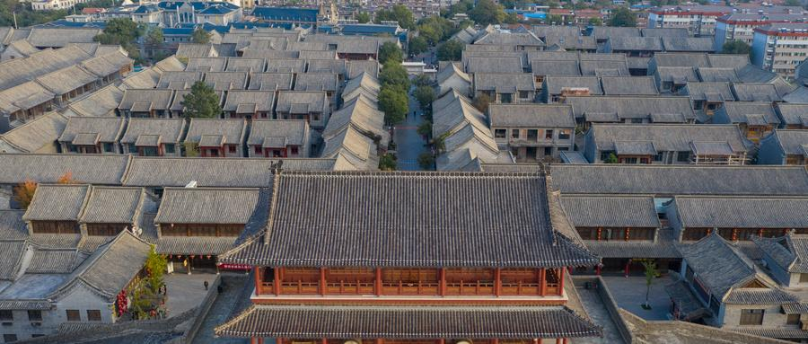
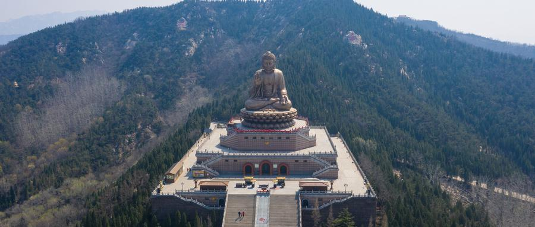
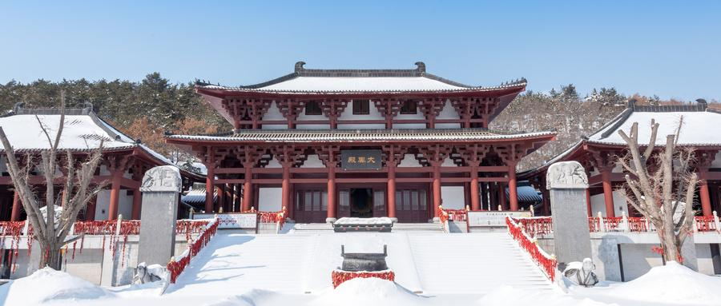
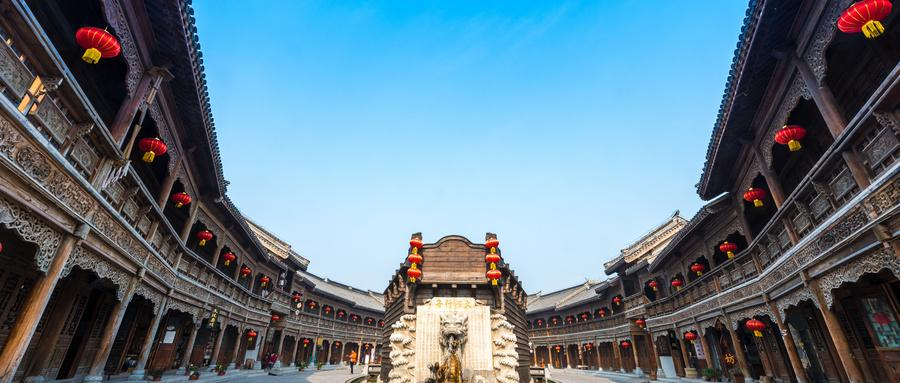
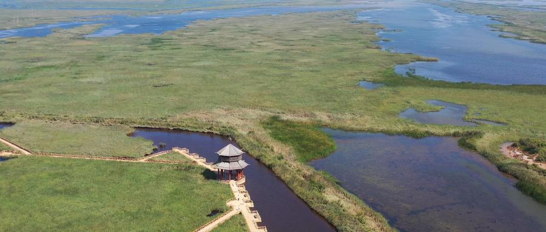
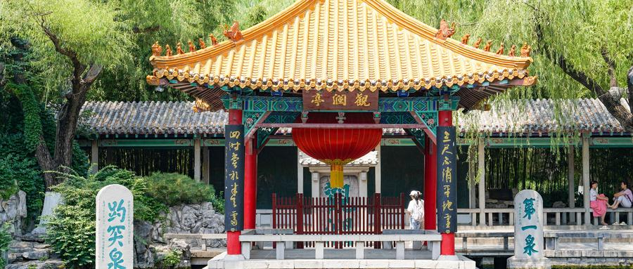

泰山风景区
位于山东省泰安市，泰山被喻为中华民族伟大崇高的象征，由古老的片麻岩构成的断块山地，崛起于华北大平原东缘的齐鲁丘陵之上，主峰海拔1545m，山势磅礴，雄伟壮丽，为五岳之首，门票：115元/人次
蓬菜阁旅游区(三仙山-八仙过海)
位于山东省烟台市蓬莱区，是神话传说中八仙过海的地方，著名景点八仙坊、仙人桥、仙源楼、八仙壁、望瀛楼、八仙祠，门票：140元/人次。
青岛崂山景区
位于山东省青岛市崂山区，是中国海岸线第一高峰，有着海上“第一名山”之称，2022年6月1日-2022年12月31日，崂山风景区面向游客实行免景区门票政策。

曲阜明故城(三孔)旅游区
位于山东省济宁曲阜市，是以曲阜的孔庙、孔府、孔林为旅游依托，规模宏大、气势雄伟壮丽、金碧辉煌，极具东方特色，被誉为“天下第一庙”，门票：140元/人次。
刘公岛景区
位于山东半岛东端威海湾内，不仅可以欣赏到壮丽秀美的风景，还藏着许多非常值得参观游览的人文景点，门票：122元/人次。

青州古城旅游区
位于山东省潍坊市，城建格局完整，历史脉络清晰，是国内外罕见，至今保存完好、山水城一体的明清古城，有7000余年的发展史，部门项目收费。

烟台龙口南山景区
位于山东省烟台龙口南山景区，景区分为宗教文化园、历史文化园、东海旅游度假区和南山健康文化小镇四大部分，世界第一锡青铜坐佛——南山大佛坐落在南山景区内，佛像座南面北，为景区内一大亮点，门票：120元/人次。

威海华夏城景区
位于山东省威海市环翠区，是以展示东方古典文化为主的大型生态文化景区，门票：60元/人次。

台儿庄古城
位于山东省枣庄市台儿庄区华兴路东段，处于京杭大运河的中心点，台儿庄古城拥有北方大院、徽派建筑、水乡建筑、闽南建筑、欧式建筑、宗教建筑、岭南建筑、鲁南民居等八种建筑风格，既体现了北方建筑的壮观沉实，又体现了南方建筑的灵巧秀美，门票：160元/人次。

黄河口生态旅游区
山东省东营市垦利区黄河入海口地域，这里不仅是黄河的入海处，还拥有独特的湿地生态系统，拥有多种珍稀鸟类和植物，旅游资源非常丰富，门票：90元/人次。

天下第一泉景区
位于山东省济南市，由“一河、一湖、三泉、四园”组成。一河是护城河，一湖是大明湖，三泉是趵突泉、黑虎泉、五龙潭三大泉群，四园是趵突泉公园、环城公园、五龙潭公园、大明湖风景区，是集独特的自然山水景观和深厚的历史文化底蕴于一体的旅游景区，风景优美，部分项目收费。
萤火虫水洞.地下大峡谷旅游区
位于山东省沂水县城，有亚洲罕见的萤火虫奇观、形态各异的钟乳石、水量达35万立方的岩溶暗湖、江北特大的生态蝴蝶谷等独有景观，是集休闲观光、科普教育、科考探险等多功能于一体大型综合性生态旅游区，联票168元/人次。
沂蒙山旅游区
位于山东省潍坊市，沂山的历史文化底蕴深厚，源远流长，自古以来，就吸引了大批的帝王将相和文人雅士纷纷前来祭拜赞美，沂蒙山五大景区交相辉映，具有南险、北奇、东秀、西幽之特点，通票150元/人次。
微山湖旅游区
位于山东省济宁市，不仅历史悠久，古迹众多，还有丰富又独特的自然景观，并且微山湖还是著名的抗日根据地，门票：100元/人次。